| 땔감 | 나무를 잘라 만든 장작 | 목재 3 | 텅 빈 섬 작업대 | |
| 밀 주머니 | 수확한 밀이 들어 있는 천 주머니 | 밀 2 실 2 마른 풀 1 |
텅 빈 섬 작업대 | |
| 쌓아올린 책 | 높게 쌓여 당장이라도 무너질 것 같은 책 ■ 색 변경 가능 ※ 빌더 하트 20 교환 (잠금 해제) |
책 3 | 텅 빈 섬 작업대 | |
| 대걸레 장식 | 방과 갑판 등을 청소할 때 쓰는 대걸레 ※ 빌더 하트 20 교환 (잠금 해제) |
목재 1 풀 실 1 |
텅 빈 섬 작업대 | |
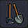 |
농기구 장식 | 농사일에 자주 쓰이는 도구 장식 | 석재 2 목재 1 |
텅 빈 섬 작업대 |
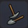 |
곡괭이 장식 | 광산을 발굴할 때 쓰였던 도구 | 철괴 2 목재 1 |
텅 빈 섬 작업대 |
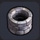 |
우물 | 물을 길어올리기 위해 판 구멍 | 석재 3 | 텅 빈 섬 작업대 |
| 키 손잡이 | 탈것에 빠져서는 안 되는 진로 조종용 블록 | 목재 3 철괴 1 |
텅 빈 섬 작업대 | |
| 갑옷 보관대 | 보고 즐기는 장식용 갑옷 | 철괴 3 목재 1 |
텅 빈 섬 작업대 | |
| 보물 상자 | 보물이 숨겨져 있을 때도 있는 상자 ※ 빌더 하트 50 교환 (잠금 해제) |
철괴 1 금괴 1 |
텅 빈 섬 작업대 | |
| 파이프 | 액체나 기체를 머신 안으로 주입하는 파이프 ■ 방향을 맞춰 나란히 놓으면 자동으로 변화 |
시도늄 2 | 텅 빈 섬 작업대 | |
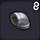 |
파이프 - 커브 | 액체나 기체를 머신 안으로 주입하는 파이프 ■ 방향을 맞춰 나란히 놓으면 자동으로 변화 |
시도늄 2 | 텅 빈 섬 작업대 |
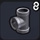 |
파이프 - T자 | 액체나 기체를 머신 안으로 주입하는 파이프 ■ 방향을 맞춰 나란히 놓으면 자동으로 변화 |
시도늄 2 | 텅 빈 섬 작업대 |
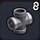 |
파이프 - 십자 | 액체나 기체를 머신 안으로 주입하는 파이프 | 시도늄 2 | 텅 빈 섬 작업대 |
| 병사용 마네킹 | 병사들의 훈련에 사용하는 가짜 인형 | 목재 3 | 텅 빈 섬 작업대 | |
| 여신상 | 상냥한 미소를 띤 여신 조각상 | 석재 4 | 텅 빈 섬 작업대 | |
| 사신 조각상 | 하곤 교단이 숭배하는 사신을 본뜬 조각상 | 커다란 비늘 4 뼈 3 |
텅 빈 섬 작업대 | |
| 눈사람 | 크게 둥글린 눈을 쌓아 만든 눈사람 | 꽁꽁섬 얼음 해변 주변 |
／ | |
| 카도마츠 | 새해에 문 앞에 두는 장식 ■ 무료 DLC (새해 팩) |
목재 15 풀 실 5 |
텅 빈 섬 작업대 | |
| 칸막이 | 방을 나눌 때 쓰이는 나무 판자 | 목재 3 | 텅 빈 섬 작업대 | |
| 창 보관대 | 창을 여러 개 세워 놓은 방 장식 | 강철괴 1 목재 3 |
텅 빈 섬 작업대 | |
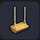 |
그네 | 나무와 끈으로 만들어진 1인승 그네 | 목재 3 실 8 |
텅 빈 섬 작업대 |
| 파라솔 | 금속 뼈대에 천을 씌운 지면에 놓는 우산 ■ 색 변경 가능 |
모피 3 철괴 1 목재 1 |
텅 빈 섬 작업대 | |
| 괘종시계 | 시간을 째깍이는 기계식 가구 ■ 색 변경 가능 ※ 빌더 하트 20 교환 (잠금 해제) |
목재 6 | 텅 빈 섬 작업대 | |
| 단두대 | 커다란 칼날로 목을 자르는 무시무시한 처형대 ※ 출렁출렁섬에서 아크 데몬이 드롭 |
- | ／ | |
| 로토의 깃발 | 용사의 문장이 그려진 멋진 깃발 ※ 빌더 하트 50 교환 (잠금 해제) |
솜 2 목재 1 실 1 | 텅 빈 섬 작업대 | |
| 찢어진 로토의 깃발 | 전투로 인해 찢어진 용사의 문장이 그려진 깃발 | 로토의 깃발 1 | 그루터기 작업대 | |
| 패전 깃발 | 치열한 전투로 엉망이 된 깃발 | 벽さし 깃발 1 | 그루터기 작업대 | |
| 교단의 깃발 | 하곤군의 영지임을 나타내는 깃발 | 솜 2 철괴 1 |
그루터기 작업대 | |
| 용왕군의 깃발 | 용왕의 모습을 본뜬 깃발 ※ 출렁출렁섬에서 실버 데빌이 드롭 |
- | ／ | |
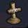 |
나무 무덤 | 목재로 간단하게 만들어진 무덤 ※ 빌더 하트 20 교환 (잠금 해제) |
목재 2 실 1 |
텅 빈 섬 작업대 |
| 돌 무덤 | 돌을 정성껏 조각하여 만든 무덤 | 석재 2 | 텅 빈 섬 작업대 | |
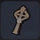 |
철제 모표 | 금속으로 만들어진 누군가의 무덤 ※ 빌더 하트 20 교환 (잠금 해제) |
철괴 3 | 텅 빈 섬 작업대 |
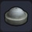 |
작은 분수 | 작은 물기둥을 뿜는 분수 ■ 물속에 두고 사용 |
철괴 1 석재 1 |
텅 빈 섬 작업대 |
| 분수 | 물속에 놓으면 꼭대기에서 물이 솟아나오는 장식물 ■ 물속에 두고 사용 ※ 빌더 하트 50 교환 (잠금 해제) |
석재 4 은괴 1 |
텅 빈 섬 작업대 | |
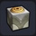 |
바닥 분수 | 큰 물기둥을 뿜는 분수 ■ 물속에 두고 사용 ※ 빌더 하트 50 교환 (잠금 해제) |
대리석 3 금괴 2 |
텅 빈 섬 작업대 |
| 석탑 분수 | 꼭대기에서 물이 흘러나오는 장식품 ■ 물속에 두고 사용 |
석재 4 모래 1 풀 실 1 | 텅 빈 섬 작업대 | |
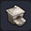 |
분출구 | 뜨거운 물이 나오는 릴리프 패턴의 분출구 ■ 물을 향해 두고 사용한다 ※ 꽁꽁섬에서 온천물(갈증 항아리) 입수 후 (잠금 해제) |
석재 3 | 텅 빈 섬 작업대 |
| 사자 욕탕 장식 | 용맹한 짐승의 얼굴이 새겨진 장식 ■ 물속에 두고 사용 / 색 변경 가능 ※ 꽁꽁섬에서 온천물(갈증 항아리) 입수 후 (잠금 해제) |
목재 3 | 텅 빈 섬 작업대 | |
| 드럼 세트 | 리듬에 맞춰 두드리는 타악기 세트 ※ 텅 빈 섬에서 방 레시피를 만들자 25 (잠금 해제) |
목재 6 모피 4 |
텅 빈 섬 작업대 | |
| 첼로 | 저음으로 곡의 매력을 끌어내는 현악기 ※ 텅 빈 섬에서 방 레시피를 만들자 50 (잠금 해제) |
목재 6 철괴 3 모피 2 |
텅 빈 섬 작업대 | |
| 그랜드 피아노 | 현을 퉁기면 소리가 나는 복잡한 구조의 악기 ■ 색 변경 가능 ※ 텅 빈 섬에서 방 레시피를 만들자 15 (잠금 해제) |
목재 5 동괴 2 풀 실 3 |
텅 빈 섬 작업대 | |
| 하프 | 그리운 선율을 연주할 수 있는 하프 | 석재 10 풀 실 5 |
텅 빈 섬 작업대 | |
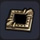 |
마물의 소환 바닥 | 불길한 바닥 장식재 ※ 빌더 하트 10 교환 (잠금 해제) |
동괴 3 | 텅 빈 섬 작업대 |
| 성의 바닥 큰 릴리프 | 성에 사용되는 큰 장식 바닥 ■ 색 변경 가능 ※ 빌더 하트 50 교환 (잠금 해제) |
대리석 2 | 텅 빈 섬 작업대 | |
| 마물의 바닥 릴리프 | 마물의 모습이 새겨진 바닥 장식재 ※ 빌더 하트 20 교환 (잠금 해제) |
동괴 1 | 텅 빈 섬 작업대 | |
| 로토의 바닥 릴리프 | 용사의 문장이 조각된 바닥 장식재 ※ 빌더 하트 50 교환 (잠금 해제) |
석재 5 | 텅 빈 섬 작업대 | |
| 보물의 산 | 눈부시게 빛나는 보물의 산 ※ 텅 빈 섬 방의 화려함을 올리자 80 (잠금 해제) |
금괴 20 은괴 20 붉은 보석 10 다이아몬드 10 보물 상자 1 |
텅 빈 섬 작업대 | |
| 이름 표지판 | 주민의 이름을 써 개인실로 만들 수 있는 표지판 ■ 방을 사용할 주민을 고른다 / 색 변경 가능 |
목재 1 실 1 |
텅 빈 섬 작업대 | |
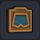 |
남자 표지판 | 방의 주인을 나타내는 파란 벽장식 ■ 특정 남성의 방으로 설정할 수 있다 |
목재 1 | 텅 빈 섬 작업대 |
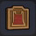 |
여자 표지판 | 방의 주인을 나타내는 빨간 벽장식 ■ 특정 여성의 방으로 설정할 수 있다 |
목재 1 | 텅 빈 섬 작업대 |
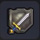 |
무기점 표지판 | 무기를 취급하는 시설의 표지용 장식 ※ 빌더 하트 10 교환 (잠금 해제) |
철괴 1 | 텅 빈 섬 작업대 |
| 도구점 표지판 | 도구를 취급하는 시설의 표지용 장식 | 목재 1 | 텅 빈 섬 작업대 | |
| 여관 표지판 | 여행자가 숙박하는 시설의 표지용 장식 | 목재 1 | 텅 빈 섬 작업대 | |
| 술집 표지판 | 식사를 할 수 있는 시설의 표지용 장식 | 철괴 1 | 텅 빈 섬 작업대 | |
| 마신 표지판 | 커다란 해머가 새겨진 장식 ※ 빌더 하트 20 교환 (잠금 해제) |
무기점 표지판 1 미스릴 1 |
텅 빈 섬 작업대 | |
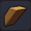 |
버팀목 | 건물을 받칠 때 쓰이는 비스듬히 자른 나무 지지대 ■ 색 변경 가능 ※ 빌더 하트 10 교환 (잠금 해제) |
목재 1 | 텅 빈 섬 작업대 |
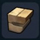 |
유적의 벽장식 | 유적의 벽 등에 사용되는 돌 장식 ※ 빌더 하트 20 교환 (잠금 해제) |
석재 2 흙 2 |
텅 빈 섬 작업대 |
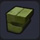 |
사교의 벽장식 | 하곤성 성벽에 장식된 돌 장식 ※ 빌더 하트 20 교환 (잠금 해제) |
파괴의 모래 5 뼈 2 |
텅 빈 섬 작업대 |
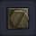 |
육각 볼트 | 벽 등이 떨어지지 않게 고정할 때 쓰이는 볼트 ※ 철괴를 모으자 (잠금 해제) |
철괴 2 | 텅 빈 섬 작업대 |
| 벽에 거는 수건 | 손을 닦기에 최적인 작은 수건 ■ 색 변경 가능 |
풀 실 2 목재 1 | 텅 빈 섬 작업대 | |
| 축제 깃발 | 축제 장식으로 쓰이는천으로 된 깃발 ■ 색 변경 가능 |
풀 실 3 실 1 |
텅 빈 섬 작업대 | |
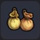 |
천 주머니 | 천으로 된 벽에 거는 주머니 | 풀 실 2 실 1 |
텅 빈 섬 작업대 |
| 가죽 주머니 | 벽에 매달아 쓰는 가죽제 자루 | 모피 1 실 1 |
텅 빈 섬 작업대 | |
| 주방 장식 | 요리에 꼭 필요한 도구를 모아놓은 벽걸이 ※ 빌더 하트 20 교환 (잠금 해제) |
철괴 1 목재 1 |
텅 빈 섬 작업대 | |
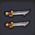 |
검 보관대 | 싸움에는 쓰지 않는 장식용 무기 | 철괴 2 | 텅 빈 섬 작업대 |
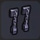 |
포로 사슬 | 벽에 다는 두 줄의 사슬 | 철괴 2 | 텅 빈 섬 작업대 |
| 벽걸이 장식대 | 다양한 물건을 장식할 때 쓰이는 받침대 ※ 빌더 하트 20 교환 (잠금 해제) |
금괴 2 | 텅 빈 섬 작업대 | |
| 화려한 벽걸이 천 | 풀 실을 엮어 만든 벽에 거는 직물 ■ 색 변경 가능 ※ 빌더 하트 20 교환 (잠금 해제) |
풀 실 3 | 텅 빈 섬 작업대 | |
| 각종 꽃 벽장식 | 많은 꽃을 피운 귀여운 벽장식 ※ 텅 빈 섬에 다양한 꽃을 놓자 10 (잠금 해제) |
덩굴 장비 1 글라디올러스 3 등꽃 - 중 3 해바라기 3 하얀 꽃 3 |
텅 빈 섬 작업대 | |
| 그린 패널 | 초목을 어레인지한 벽에 거는 장식 ※ 텅 빈 섬에 경치 초원을 만들자 (잠금 해제) |
큰나무 잎 1 실 1 목재 1 |
텅 빈 섬 작업대 | |
| 다트판 | 둥글게 자른 나무에 원을 그린 다트 표적 | 철괴 3 목재 2 |
텅 빈 섬 작업대 | |
| 현수막 | 천장에 달아서 가리개로도 쓸 수 있는 막 ■ 색 변경 가능 |
풀 실 3 실 3 |
텅 빈 섬 작업대 | |
| 커튼 | 창문에 달아 여닫을 수 있는 칸막이 천 ■ 색 변경 가능 |
솜 3 실 2 |
텅 빈 섬 작업대 | |
| 오페라 커튼 | 벽 등을 호화롭게 장식하는 휘장 ■ 색 변경 가능 |
솜 3 | 텅 빈 섬 작업대 | |
| 태피스트리 | 문양을 넣어 짠 벽장식 ■ 색 변경 가능 |
솜 3 금괴 1 |
텅 빈 섬 작업대 | |
| 큰 태피스트리 | 아름다운 문양이 근사한 벽장식 ■ 색 변경 가능 |
솜 5 금괴 3 |
텅 빈 섬 작업대 | |
| 벽에 꽂는 깃발 | 벽에 달아 장식하는 깃발 ■ 색 변경 가능 |
솜 3 금괴 1 목재 1 |
텅 빈 섬 작업대 | |
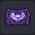 |
교단 벽 장식 | 하곤군이 사용하는 사악한 깃발 ※ 빌더 하트 50 교환 (잠금 해제) |
풀 실 3 금괴 1 목재 1 |
텅 빈 섬 작업대 |
| 돌 릴리프 | 벽에 장식하는 작은 돌 부조 ■ 색 변경 가능 ※ 빌더 하트 20 교환 (잠금 해제) |
석재 1 | 텅 빈 섬 작업대 | |
| 참수리의 릴리프 | 은을 붙인 커다란 벽장식용 독수리 부조 | 대리석 2 철괴 1 |
텅 빈 섬 작업대 | |
| 악마 벽장식 | 거대한 마물의 얼굴을 본뜬 장식 ※ 빌더 하트 20 교환 (잠금 해제) |
파괴의 모래 4 석재 3 |
텅 빈 섬 작업대 | |
| 속이 빈 큰 해골 | 파괴신 시도의 가슴에 걸려 있는 거대 해골 ※ 빌더 하트 50 교환 (잠금 해제) |
뼈 5 | 그루터기 작업대 | |
| 여성의 초상화 | 아름다운 여성이 그려진 그림 ※ 빌더 하트 50 교환 (잠금 해제) |
풀 실 5 목재 1 |
텅 빈 섬 작업대 | |
| 공주의 초상화 | 아름다운 공주가 그려진 그림 ※ 문부르크섬의 문페타 부서진 교회 작은 방 |
- | ／ | |
| 로토의 대형 시계 | 성 사람들 모두가 볼 수 있는 대형 시계 ■ 색 변경 가능 ※ 주민의 취향에 맞는 방을 만들자 5 (잠금 해제) |
금괴 15 강철괴 15 블루 메탈 10 |
텅 빈 섬 작업대 | |
| 만드라 풀 | 뽑으면 끔직한 비명을 지르는 만드라 ※ 텅 빈 섬에서 많은 꽃을 심고 랜덤으로 등장 |
- | ／ | |
| 선인장 볼 | 동그란 선인장에 얼굴이 달린 명랑한 마물 ※ 오카무르섬의 기둥 선인장 옆에 랜덤으로 있음 |
- | ／ | |
| 드라키 토템 - 파랑 | 파란 드라키 토템 ■ 3가지 색을 겹치면 …？ ※ 몬조라섬의 습지대 중앙 동편의 동굴에서 습득 |
목재 10 양배추 10 |
텅 빈 섬 작업대 | |
| 드라키 토템 - 노랑 | 노란 드라키 토템 ■ 3가지 색을 겹치면 …？ ※ 몬조라섬의 습지대 중앙 동굴에서 습득 |
목재 10 밀 10 |
텅 빈 섬 작업대 |